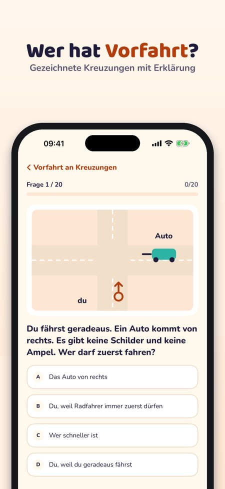
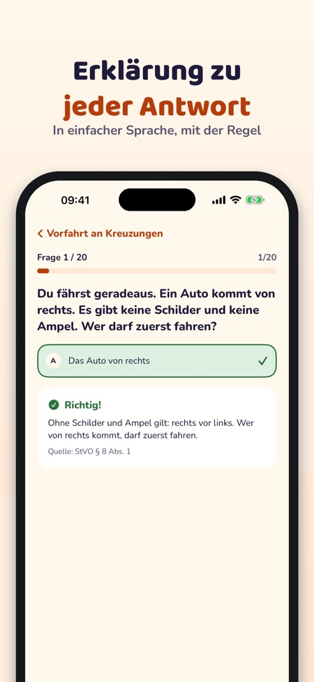
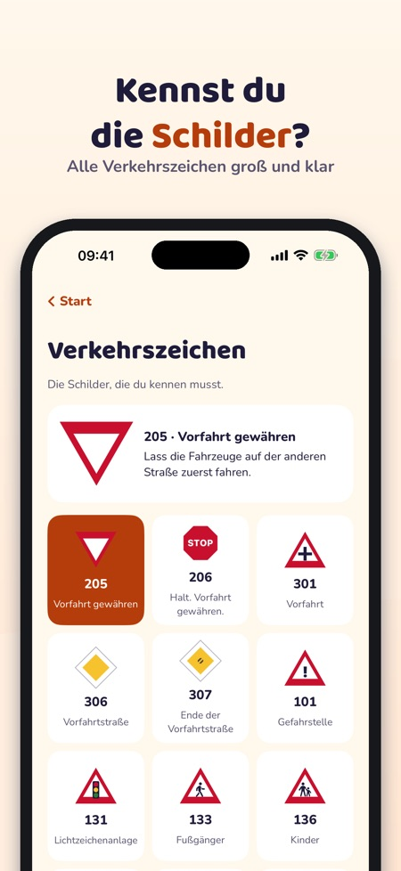

Radfahrprüfung üben, 4. Klasse. Übe für die Radfahrprüfung: Fragen mit Erklärung, Kreuzungen, Verkehrszeichen und eine Probeprüfung – spielerisch, klar und offline.



Radheld hilft Kindern, für die Radfahrprüfung in der Schule zu üben – mit Kreuzungen, Schildern und Fahrradregeln in einfacher Sprache.
20 Fragen, die Verkehrszeichen, die Begriffe und die Checkliste kannst du ohne Kauf nutzen. Die Vollversion ist ein Einmalkauf und schaltet alle Fragen, Simulationen und die Statistik frei. Kein Abo. Kaufen und Links nach außen nur über die Eltern (Kindersicherung).
Radheld ist unabhängig und nimmt keine Prüfungen ab. Die Prüfung machst du in der Schule. Die App sammelt keine Daten und hat keine Werbung.